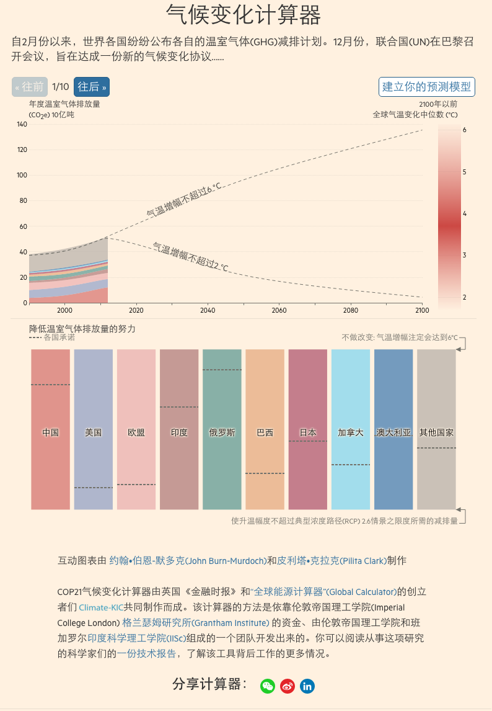

Works at FTChinese.com
Silva Shih • Apr 28 2016
About me
- Now: I'm data editor at FTC based in Beijing. Making charts and reporting on Taiwan.
- Past: Covering business in Taiwan over 5 ys. Switch to the digital realm 3 yrs ago.
- Between: Taipei-NYC-Beijing
About FTC
- 10 editors and 10 translators spread in 4 offices.
- 50% pieces on the site are translated from the FT.com.
- 50% pieces are editorials, Op-Eds and columns run and produced by FTC editors.
My role at FTC...I assume

Works so far
Transfer FT's works to the FTC site.
Produce weekly or biweekly local data stories.
Produce monthly mulitmedia pieces.
1. Transfer FT's works to the FTC site.
FT:"What is at stake at the Paris climate change conference?"
2. Local data stories
weekly • biweekly
3. Multimedia
monthly • seasonly

"How to read China's GDP figure?"
Practice ddj in China?
Next Steps
thing I'm gonna do1
2
3